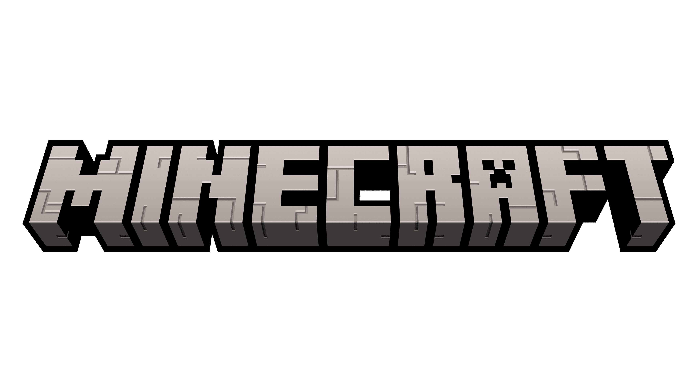

Bienvenidos a PapiTops, tu pagina de tops favorita
En el dia de hoy, traemos el top 10 videojuegos mas populares de la historia
- Minecraft
- Super Mario Bros
- Pong
- The Legend Of Zelda: Ocarina of Time
- Grand Theft Auto V
- Candy Crush Saga
- World of Warcraft
- League of Legends
- The Witcher 3: Wild Hunt
- Portal
Videojuego más vendido de todos los tiempos : Minecraft
Este juego de construcción y aventura ha logrado vender más de 200 millones de copias en todo el mundo.
Minecraft ha capturado la imaginación de jugadores de todas las edades, permitiéndoles crear y
explorar infinitos mundos generados de forma procedural.Su éxito se debe en gran parte a su libertad creativa
y a la posibilidad de jugar en modo individual o multijugador.

Videojuego más icónico de todos los tiempos : Super Mario Bros
Este clásico de Nintendo ha sido elogiado por su innovadora jugabilidad, diseño de niveles y carismáticos personajes.
Desde su lanzamiento en 1985, Super Mario Bros se ha convertido en un verdadero ícono de la cultura pop y ha dejado
su marca en la industria del gaming. Su éxito ha trascendido generaciones y ha sido el punto de partida para numerosas secuelas y spin-offs.

Videojuego más influyente de todos los tiempos : Pong
Este juego de arcade, lanzado en 1972, fue el primero en alcanzar un gran éxito comercial y sentó las bases
para la industria del videojuego tal como la conocemos hoy en día. Pong fue el primer juego en popularizar
los gráficos digitales y sentó las bases para futuros avances en la tecnología de videojuegos.
Su influencia se puede ver en la gran cantidad de juegos de deportes y juegos de mesa que se han desarrollado desde entonces.

Videojuego más aclamado de todos los tiempos : The Legend Of Zelda: Ocarina of Time
Este juego de aventura, lanzado en 1998 para Nintendo 64, ha sido elogiado por su narrativa, diseño de niveles y jugabilidad innovadora.
Considerado uno de los mejores juegos de todos los tiempos, The Legend of Zelda: Ocarina of Time ha recibido numerosos premios.

Videojuego más revolucionario de todos los tiempos : Grand Theft Auto V
Este juego de mundo abierto, lanzado en 2013, ha llevado los límites de los gráficos y la jugabilidad a un nuevo nivel.
Con su impresionante atención al detalle, vasto mundo abierto y una historia épica,
Grand Theft Auto V ha establecido nuevos estándares en la industria del gaming.
Grand Theft Auto V también es considerado el videojuego más exitoso en términos de ventas y repercusión mediática.
Ha logrado romper récords de ventas y ha generado miles de millones de dólares en ingresos.

Videojuego más adictivo de todos los tiempos : Candy Crush Saga
Este juego de puzzle, lanzado en 2012 para dispositivos móviles, ha logrado enganchar a jugadores de todas las edades con su mecánica simple, pero adictiva.
Con sus niveles desafiantes y la posibilidad de competir contra amigos, Candy Crush Saga se ha convertido en un verdadero fenómeno cultural y ha sido descargado más de mil millones de veces en todo el mundo.

Videojuego más longevo de todos los tiempos : World Of Warcraft
Este MMORPG, lanzado en 2004, ha logrado mantener una base de jugadores activa durante más de 15 años.
Con su vasto mundo virtual, innumerables misiones y la posibilidad de jugar en línea con otros jugadores,
World of Warcraft ha creado una comunidad leal que sigue disfrutando del juego y participando en nuevas expansiones y actualizaciones.

Videojuego más competitivo de todos los tiempos : League Of Legends
Este juego de estrategia en línea, lanzado en 2009, ha logrado convertirse en uno de los deportes electrónicos más populares del mundo.
Con millones de jugadores y una escena competitiva profesional,
League of Legends ha sido el protagonista de numerosos torneos y competiciones a nivel mundial, atrayendo a espectadores de todo el mundo.

Videojuego más querido de todos los tiempos : The Witcher 3: Wild Hunt
Este juego de rol y acción, lanzado en 2015, ha sido elogiado por su narrativa, personajes bien desarrollados y vasto mundo abierto.
Con su enfoque en la toma de decisiones y las consecuencias de estas, The Witcher 3: Wild Hunt ha logrado cautivar a la comunidad de jugadores,
convirtiéndose en uno de los juegos más queridos y respetados de la última década.

Videojuego más innovador de todos los tiempos : Portal
Este juego de puzzle en primera persona, lanzado en 2007, ha sido elogiado por su originalidad y creatividad.
Con su mecánica de juego única, que involucra el uso de portales para resolver acertijos,
Portal ha logrado cautivar a los jugadores con su narrativa intrigante y su diseño de niveles ingenioso.